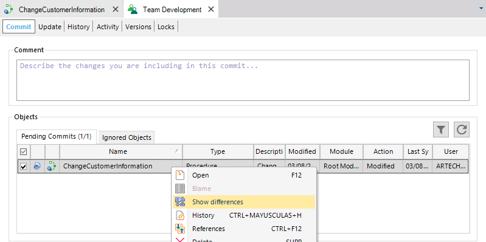
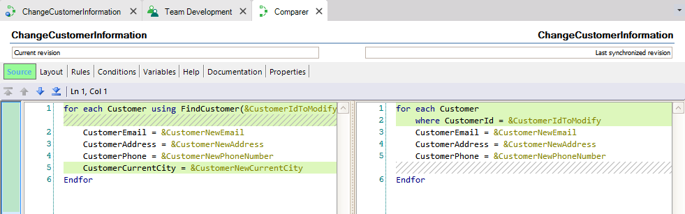
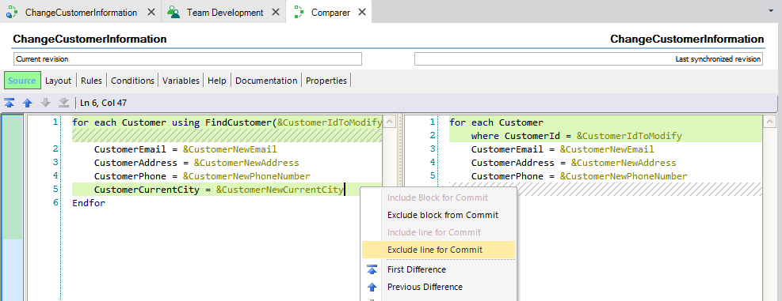
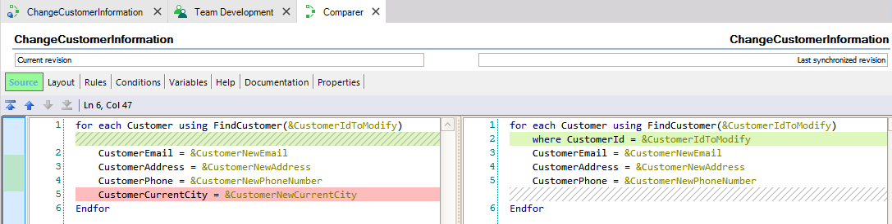
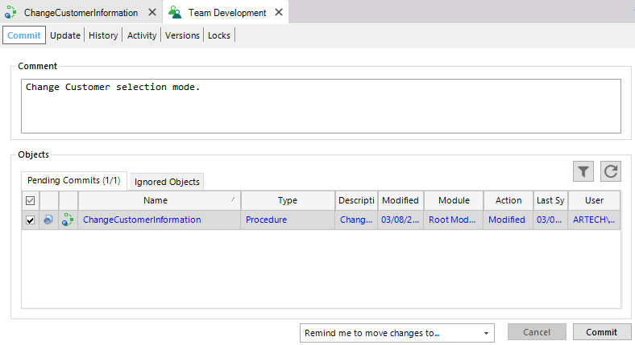

A Partial Commit is an option which allows performing a Commit operation of some part of an object without being forced to Commit the entire object. This option attempts to solve, for example, the following scenarios at the moment of making a Commit operation:
When performing a Partial Commit, the parts of the object which will be part of the Commit have to be selected. This selection has any effects in the state of the local object, so it doesn't suffer any modifications. The selection and the possible edition of the object are kept only in memory. How does it work?First of all, to be able to perform a Partial Commit of some object, it has to be Pending for Commit. Then, by right-clicking in the object, a contextual menu will be open with some options, one of them, is the Show Differences option. When selecting this option, the Comparer window will be open. From this window, the Developer will be able to choose the parts of the object to be included/excluded from the Commit. When the selection is done and the object saved by clicking the Save button, the Commit dialog will show up again, highlighting the object with a blue color, indicating that only some parts of the object will be committed. The only thing left to do is to click the Commit button. AvailabilityThis option's only available for code parts, this means, for example, the Procedure Source, Rules and Conditions parts or Events of a Web Panel. Usage exampleLet´s imagine the Customers information of the TravelAgency reality. The Developer defines a new procedure which changes the information related to a given Customer and perform a Commit of the entire object to GeneXus Server.
Then, the Developer realize that he forgot to include the current Customer city. Also, he wants to change the way the selection of the desired Customer it's made. After making the corresponding modifications, he wants to make two differents Commits (one per modification) without modifying his local object.
From the Commit dialog, the Developer makes a Show differences with the GeneXus Server object: 

And select one of the changes to exclude it from the Commit: 

Then, the Developer Save the changes to the edition in the memory by clicking the Save button (). 
And makes the Commit. As a result of the operation, the status of the objects are:
|